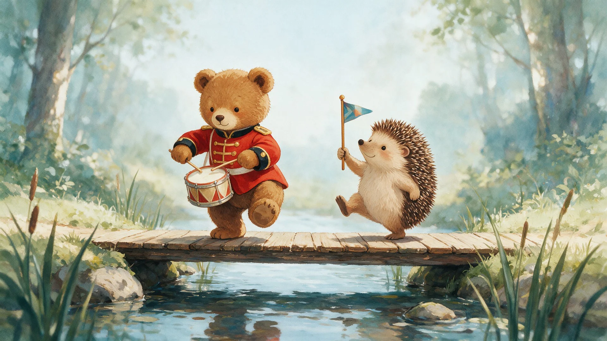
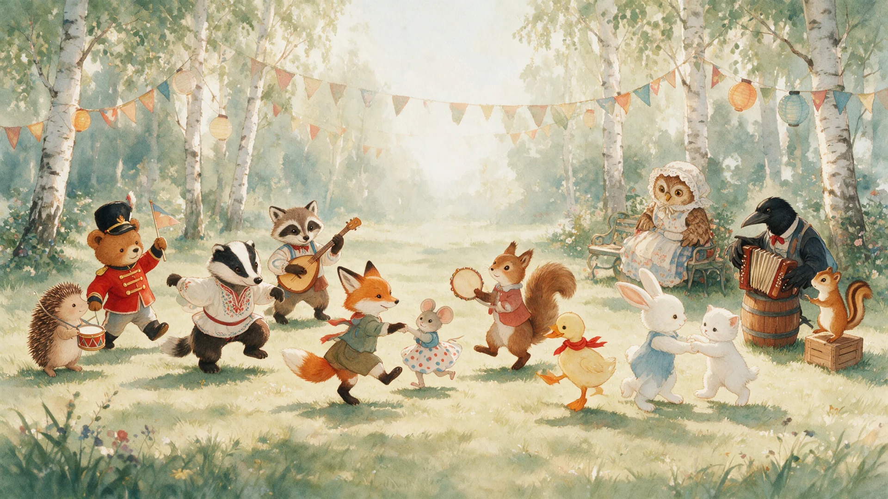
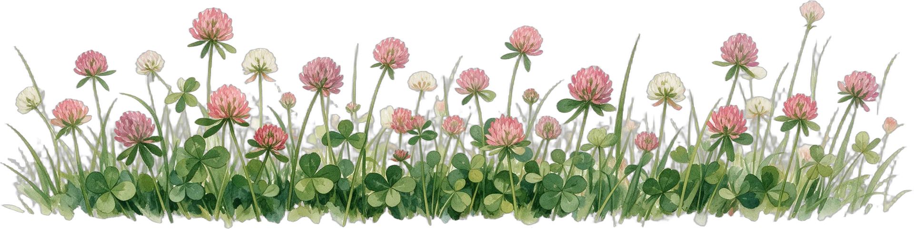

Танцевальная полянка
Повторяй танцевальные движения за персонажами и танцуй под композиции Петра Ильича Чайковского!

Посмотри видео и повторяй за персонажами
П. И. Чайковский, Марш деревянных солдатиков


Вернуться в меню
Ты повторил все шесть танцев вместе со зверятами
Все танцы станцованы!
Танцевальная полянка
1 / 6